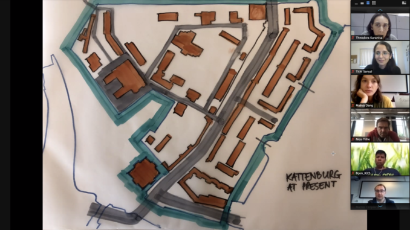
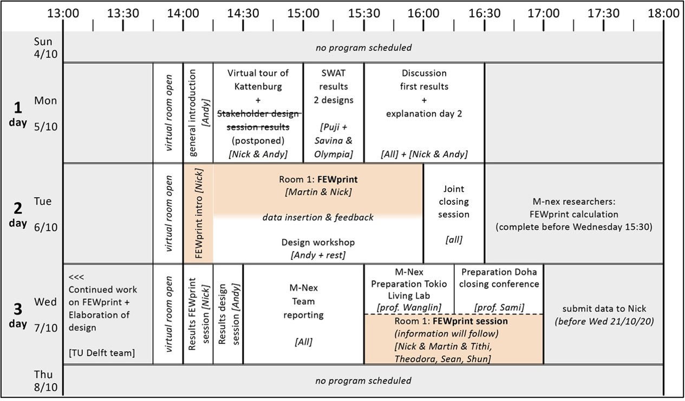
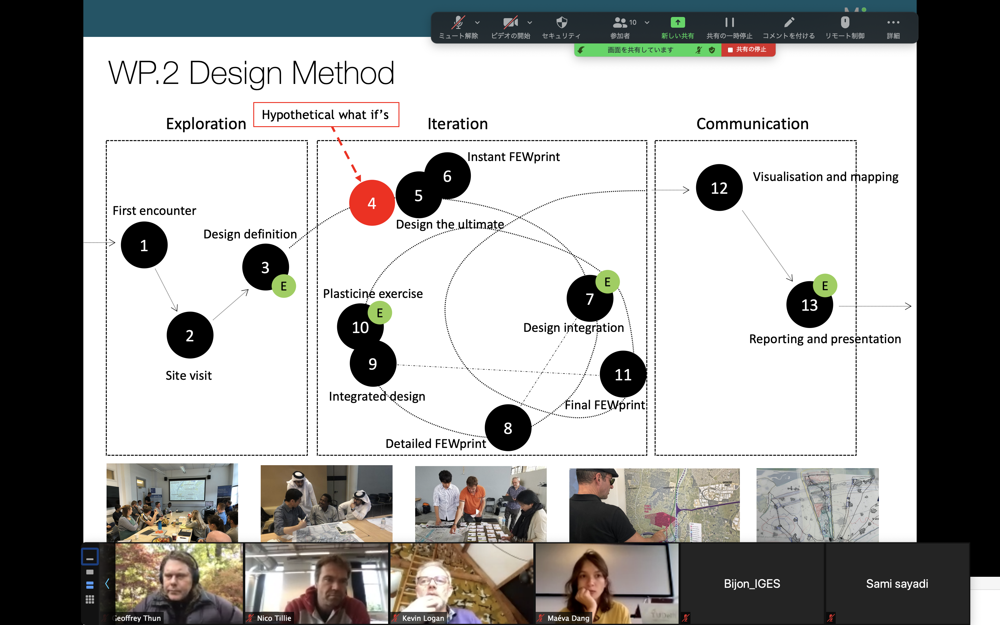
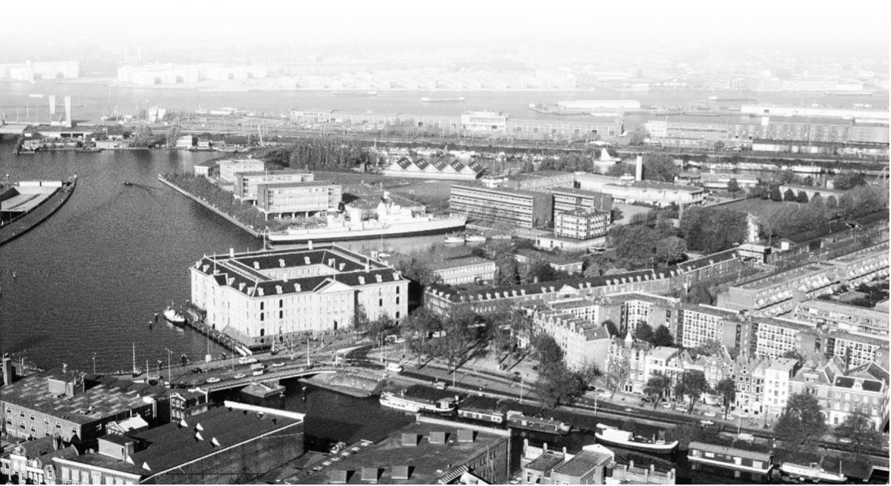
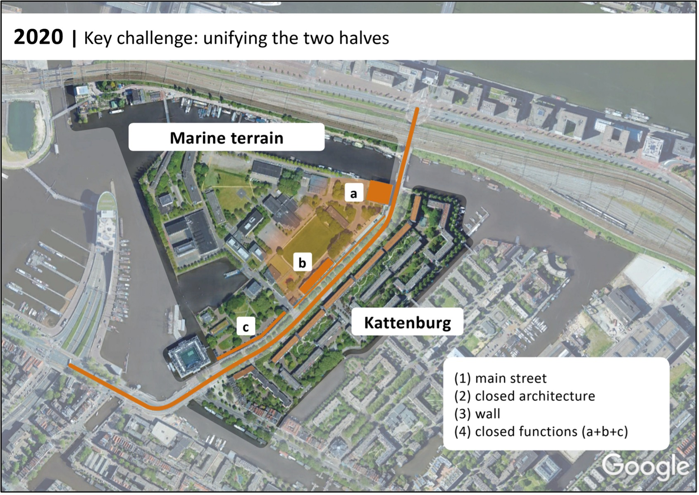
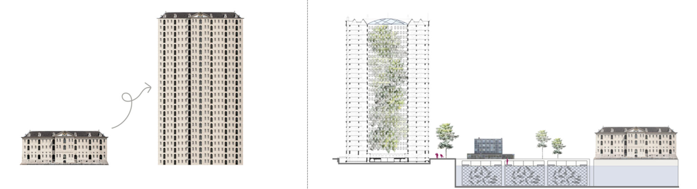
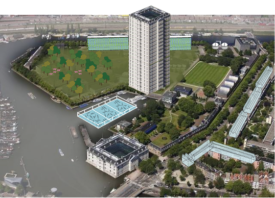
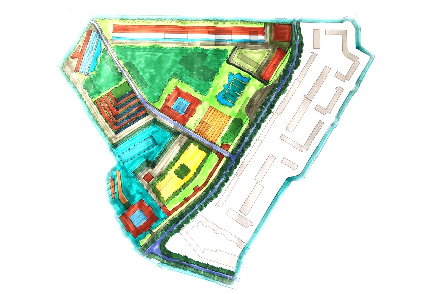
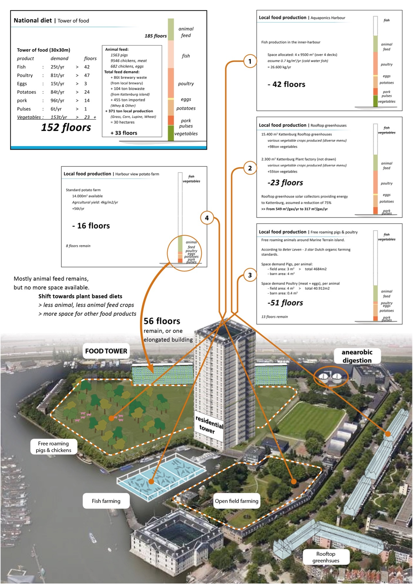

M-Nex Design Workshop Amsterdam (ONLINE)
Kattenburg, M-Nex Amsterdam Living lab
Nick ten Caat, PhD researcher
Delft, November 30, 2020
The Amsterdam Living lab was organised as the sixth and final M-Nex Living Lab workshop. Initially, the workshop was intended to follow the familiar M-Nex structure for the duration of one full working week at the case study location: Kattenburg. However, due to an increase in COVID-19 infections in the Netherlands and the consequential restrictions regarding international travel and on-site activities, it was decided to have the workshop online and shorten it with two days. Only the TU Delft team met physically in Delft (at safe distance) to host the workshop and conduct offline activities as a group.
Workshop programme
The Amsterdam Living Lab took place from Monday 5/10/2020 until Wednesday 7/10/2020.

Attendees:
Queens University Belfast, Belfast – U.K.:
prof. Greg Keeffe (PI), dr. Sean Cullen, Kevin Logan (Maccreanor Lavington)
University of Technology Sydney, Sydney – Australia:
prof. dr. Rob Roggema (PI)
Qatar University, Doha-Qatar:
prof. dr. Sami Sayadi (PI), dr. Theodora Karinisa
Michigan University, Ann Arbor, U.S.A.:
prof. Geoffrey Thün, Tithi Sanyal, Linda Lee
KEIO University, Tokyo – Japan:
prof. Wanglin Yan (PI), Shun Nakayama, Bijon Kumer Mitra (IGES), Tokomo Takeda (IGES), Bao Pham (NGOC)
Delft University of Technology (host), Delft-Netherlands:
prof. Andy van den Dobbelsteen (PI), dr. Martin Tenpierik, dr. Nico Tillie, Nick ten Caat, dr. Maéva Dang, dr. Andrew Jenkins, Tess Blom, Puji Nata Djaja, Saskia Rutten
Workshop summary
The sixth and M-Nex Amsterdam workshop was held online and in a shortened version (Monday 5-10 till Wednesday 7-10). Kattenburg and the Marine Terrain, former areas of ship building and dock worker housing, were chosen as the case study area for this design exercise. Before this workshop, TU Delft SWAT design studio students presented the results of their design interventions for the island, which they had worked on in the weeks prior to the M-Nex workshop. Recurring theme was the unification of the two sub-islands and improving social cohesion. On the second day, a hybrid online-offline design session was organised with the team. Aside from improving the quality living in the area, making the neighbourhood future proof in terms of climate change and designing a local food production system to substitute beef based protein were two main design challenges. The FEWprint was employed to provide first insight on agricultural output and inform farm scaling. It was later used to give fist estimations on the carbon impact of local food production.

Highlights of the Workshop and Results
The tudy area: Kattenburg & the Marineterrein (Marine terrain)

The residential neighbourhood of Kattenburg (KB) and the former industrial and navy harbour of Amsterdam, known as the Marine terrain (MT) have been selected as the case study areas for M-Nex. The two neighbourhoods are jointly called Kattenburg and together form an artificial island next to the old city centre of Amsterdam. The marine terrain is located on the West side of the island and Kattenburg on the East side. The island used to be a swamp near the river edge, until around 1650 the Admiralty warehouse building was built and the surrounding island was constructed for the VOC (Dutch East India Company) ship building in the 17th and early 18thcentury. Housing for the harbour workers was built on the Kattenburg side of the island. Throughout the centuries, the harbour transformed to accommodate for the increasingly bigger ships that had to be constructed. This lasted until the early 20th century, when the ships started to outgrow the facilities and the ship building industry moved out of the area, after which the Dutch navy established a base, keeping its maritime function. The navy would settle at the MT for another century, until in 2011 the decision was taken to leave Amsterdam and sell the MT to the Amsterdam municipality for redevelopment. Within a few years, the existing building stock was repurposed to offices and educational functions as a temporary solution. Bureau Marineterrein Amsterdam was started to organise and guide the redevelopment of the area, manage current real estate, involve local residents and organise the Living Lab function of the area in collaboration with the AMS institute. It is expected that in 2026 the first construction will start. KB & MT are separated by an important and busy road, connecting Amsterdam city centre with the highways around the city. For centuries, Kattenburg provided housing to the workers of the MT. The residential neighbourhood was completely demolished and rebuilt in 1970-1976 and has since provided housing to roughly 1800 people. Up to this day, Kattenburg only fulfils a residential function.

Outputs of Design Sessions
Supported by students, the team elaborated the ideas of the day before in drawings and maps. One of the remarkable elaborations concerned the residential tower of 80 stories. Eventually we decided not to put all residents in one tower, but to arrange another urban block along the north edge of the Marine Terrain, which integrates living with a large glasshouse in front (to the south) that accommodates food production. Another extra luxury apartment block is situated north of the small harbour, overlooking the water with terraces to the south and west. By doing this, the initial residential tower could be limited to around 24 storeys, which with the footprint width created a more aesthetically pleasant ratio between width and height. We chose to pick the Admiralty Building (the Maritime Museum) as the basis and extend it to the desired 24 layers.

With the large inner courtyard footprint of the Maritime Museum, the new ‘Tower of Glory’ has a wide atrium, which is suited for semi-outdoor spaces, green and food production. Since the new building needs to be energetically self-sufficient, the outer façade will be clad with PV panels that resemble the natural stone of the Maritime Museum and that has its colour. These PV panels are on the market. The figure tight shows a section through the Tower of Glory and the harbour next to it, including the fish farm cages. On the right one can see the Maritime Museum. All in all, these interventions related to housing, enabled a relatively open-spaced Marine Terrain, providing room for various agricultural purposes. In the bird’s eye view below one can see the fish farm in the harbour, the Tower of Glory, the elongated apartment block towards the railroad to the north, the organic waste processing buildings in the right top corner, and renovated residential blocks of Kattenburg, which have greenhouses on top. The luxury apartment block north of the harbour is omitted from this image.

All in all, these interventions related to housing, enabled a relatively open-spaced Marine Terrain, providing room for various agricultural purposes. In the bird’s eye view below one can see the fish farm in the harbour, the Tower of Glory, the elongated apartment block towards the railroad to the north, the organic waste processing buildings in the right top corner, and renovated residential blocks of Kattenburg, which have greenhouses on top. The luxury apartment block north of the harbour is omitted from this image.
In the map below, which contains less explaining terms, is a more accurate image of the Kattenburg plan, focusing on the Marine Terrain only. Main differences are:
- An organic waste processing facility to the north-east of the area
- Algae water purification ponds next to the processing facility
- A piece of open farming ground, for certain crops all year round
- Hence, a smaller forest than on the previous map.

Results FEWprint
In parallel to the hyper-concentration of the future residents of the Marine terrain in one tower, we decided for the purpose of communication and visualisation to concentrate the required space for food production also in one large theoretical tower – as a starting point. The table below shows the composition of this tower and the relevant food production parameters applied. The consumption of fish, poultry, eggs, potatoes, pork, pulses and vegetables by the current residents of Kattenburg and the future residents of the MT, plus the required animal feed of almost 12.000 pigs and chickens, amounts to a tower of 181 floors with a base of 30 x 30 m, which is 122 floors more than the current highest tower in the Netherlands (Zalmhaventoren, Rotterdam). There are no community-wide dietary changes included in the food consumption of this population and it is based on the average Dutch national diet, contextualised for Kattenburg (i.e. assuming 15% Halal diets [no pork] and 20% meat lovers fraction [+15% meat consumption per person]).
